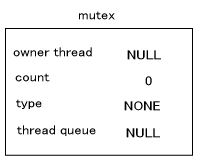
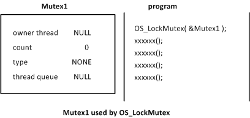
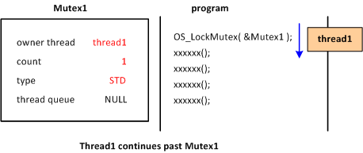
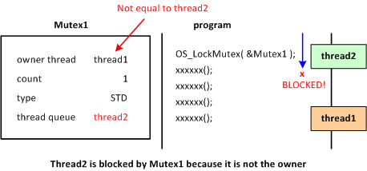
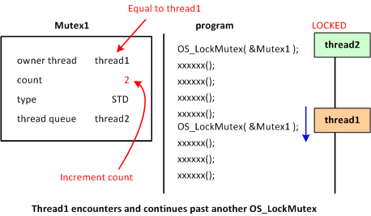
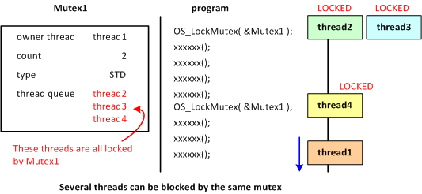
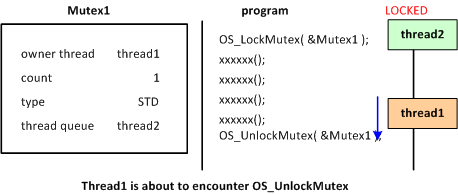
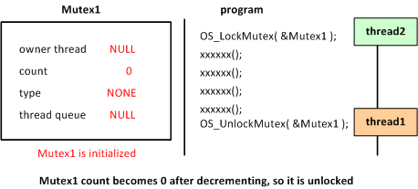
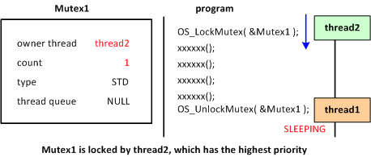
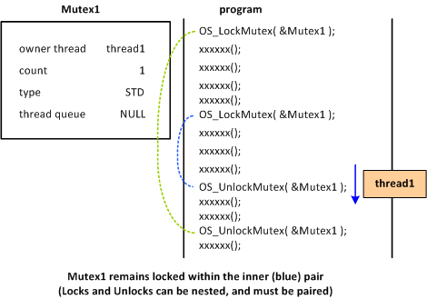

A mutex (mutual exclusion service) is a mechanism to control thread execution. This mechanism can prevent multiple threads from executing simultaneously in particular places in the program and from simultaneously accessing data, registers, and other resources.
A mutex is initialized with the OS_InitMutex function. One mutex can be configured for each OSMutex structure object.
The OSMutex structure is as follows.
struct OSMutex
{
OSThreadQueue queue;
OSThread* thread; // the current owner
s32 count; // lock count (notice: use upper 1 byte as mutex type)
OSMutex* prev; // link for OSThread.queueMutex
OSMutex* next; // link for OSThread.queueMutex
};
|
The members prev and next manage mutex lists, but queue, thread, and count compose the actual mutex synchronization feature.
queue is the thread queue where the thread that is being made to wait by mutex is registered.
thread is the member that registers the current thread that is using this mutex to block other threads.
count is the member that manages the lock nest for this mutex. It counts the number of times the lock has been set. However, the upper 1 byte is used to indicate the mutex type. The remaining 24 bits are used for the count value. The type is included in count instead of setting it to a separate member in order to retain compatibility with previous versions of mutex. (Note: Because the emphasis is on speed, the upper limit of the count value is not checked. One mutex can use 24 bits, which is equal to roughly 1.667 million nested levels. That limit will probably never be reached.)
The following section explains mutex types.
The mutex types are STD, R, and W. (These are defined in the header as OS_MUTEX_TYPE_STD and so on. In the following explanation, they are referred to as STD, R, and W.) If no type is specified, NONE is used.
For normal thread synchronization, an STD mutex is used. With this type of mutex, other threads are not permitted unconditional entry.
The R and W types are called read-lock and write-lock mutexes.
The read-lock mutex does not allow other threads to perform write or standard mutex locks. This type can be used when data is read. Multiple threads can simultaneously read the data without problem, but a data-writing process at this point could compromise the data consistency.
The write-lock mutex can be used when a thread is writing data. The data to be written cannot come from multiple threads. The W mutex does not permit another thread to read the data during the writing process. A W mutex has lock policy similar to that of a STD mutex. They are not exactly the same because there are functions to change between read-lock and write-lock mutexes.
An R mutex can change to a W type, and a W mutex can change an R type, provided there is only one level of locking by the thread with the mutex. In the following example, after data is written, the process immediately changes to reading without releasing the lock (thus permitting reading by another thread).
OSMutex mutex;
OS_InitMutex( &mutex );
void write_and_read()
{
OS_LockMutexW( &mutex ); <- write lock
writeData();
OS_LockMutexFromWToR( &mutex ); <- Change from write lock to read lock
readData();
OS_UnlockMutexR(); <- Unlock with a read lock
}
void read()
{
OS_LockMutexR( &mutex );
readData();
OS_UnlockMutexR( &mutex );
}
thread1()
{
write_and_read();
}
thread2()
{
read();
}
The following operations can be performed on a mutex after it has been initialized.
- Lock the mutex (Lock functions):
OS_LockMutex, OS_LockMutexR, OS_LockMutexW
- Unlock the mutex (Unlock functions):
OS_UnlockMutex, OS_UnlockMutexR, OS_UnlockMutexW, OS_UnlockMutexRW
- Attempt to lock the mutex (TryLock functions):
OS_TryLockMutex, OS_TryLockMutexR, OS_TryLockMutexW
When you lock a mutex, other threads are blocked from locking that mutex. However, read-lock mutexes do not block each other. A blocked thread waits for the mutex to be unlocked.
Lock functions wait until the lock is completed, but the TryLock functions return immediately, regardless of whether the mutex can be locked. You can determine from the returned value whether the lock was successful.
The following operations are available for read-lock and write-lock mutexes.
- Change the mutex type:
OS_LockMutexFromRToW, OS_LockMutexFromWToR
- Attempt to change the mutex type:
OS_TryLockMutexFromRToW, OS_TryLockMutexFromWToR
This section explains the internal operations when a mutex is locked.
When the mutex is initialized by the OS_InitMutex function, the owner of the OSMutex thread, the count value, the thread type, and the thread queue have the values shown in the following table. (The count member of OSMutex contains two pieces of information: the count value and the mutex type. This information is shown as count and type.)

This section explains locking with a standard mutex, not with a read-lock or write-lock mutex.
If the OS_LockMutex function is called in a program and the designated mutex is not being used in a lock at that point in time, OS_LockMutex records and locks the current thread.
If a OS_LockMutex call occurs for an already locked mutex, the mutex count is incremented, and the mutex is bypassed if it is being locked by the same thread as the current thread. If the thread is not the same, it goes into a pause state until the lock is released. Thread rescheduling occurs at this time.
For example, consider the figure below when there is a Mutex1 and a program that uses it for locking.

thread1 attempts to execute this program. thread1 executes the mutex lock function OS_LockMutex( &Mutex1 ), but because Mutex1 has not yet been used (determined to be true if its owner thread is NULL), thread1 is recorded as the Mutex1 owner thread, the count is set to 1, and the program returns from the lock function.

Next, consider what happens when a separate thread, thread2, attempts to execute the same program. thread2 runs OS_LockMutex( &Mutex1 ), but Mutex1 is already being used in a lock. Because thread2 is not the mutex1 owner thread, thread2 cannot proceed any further. As a result, thread2 goes into a pause state. At this point, thread2 is registered inside the mutex1 thread queue as waiting for this lock to be released.

Now consider a case where thread1 once again runs OSLockMutex( &Mutex1 ) (on the same line or a different line). mutex1 is already being used in a lock, but the mutex1 owner thread is the same as the current thread (thread1), so it can be bypassed. When this happens, the mutex1 count increments.

There are also times when multiple threads are registered in a single mutex thread queue. These threads are all blocked by that mutex. However, it is not necessarily the case that all threads are in a pause state on the same line. If the mutex is unlocked, all registered threads go into an executable state.

This section explains the internal operations when a mutex lock is being released (unlocked). Here, too, the explanation is in regards to a normal mutex and not a read-lock or write-lock mutex.
The function for unlocking with mutex is OS_UnlockMutex. However, calling this function does not invariably unlock the mutex. Only when the count value inside the mutex has decremented to 0 is the lock released. If the value is not zero, count is simply decremented, and control returns from the function.
For example, consider the case in the figure below where thread1 runs OS_UnlockMutex( &Mutex1 ) while using Mutex1 to block thread2.

At this time, the count has been decremented to zero, so the thread registered in the thread queue is put into an executable state and is rescheduled. In this case, thread2 goes into an executable state.

If thread2 has higher priority than thread1, the threads are switched. In other words, thread1 pauses, and thread2 executes. In attempting to execute OS_LockMutex( &Mutex1 ), thread2 was blocked by thread1. But this time, because Mutex1 is released and initialized, thread2 uses Mutex1 to block the other threads.

When thread1 runs the OS_UnlockMutex function and the count value is not zero after being decremented, it can be considered that there are other locks that have not been unlocked, and this can be bypassed. If this is the case, no thread rescheduling occurs. In this way, mutex locks can take on a nested structure.

Until there is a lock, OS_LockMutex does not return from the function. On the other hand, OS_TryLockMutex is a function that locks if it can, but that returns immediately if it cannot lock.
With the OS_TryLockMutex function, you can learn from its return value whether the lock was a success.
These other try functions have been prepared in the same way.
- For OS_LockMutexR, there is the OS_TryLockMutexR function
- For OS_LockMutexW, there is the OS_TryLockMutexW function
- For OS_LockMutexFromRToW, there is the OS_TryLockMutexFromRToW function
- For OS_LockMutexFromWToR, there is the OS_TryLockMutexFromWToR function
When the thread ends, every mutex locking that thread is unlocked. This is true not only for normal mutexes, but also for read-lock and write-lock mutexes.
When a function specifies a pointer to a mutex that is NULL or the call is clearly unusual in some other way, the DEBUG build catches on the SDK_ASSERT function. If an unlock function is called for a mutex that has not been locked, "Illegal unlock mutex" appears. If this message appears, verify that the lock and unlock levels accurately correspond. Note that this message is output by the SDK_TWarning function, so the program does not stop.
Overview of OS Functions (Exclusion Control)
2009/03/11 Standardized terminology for "lock" and "block." Revised some of the text in the figures.
2008/12/17 Revised contents to take read- and write-lock into account.
2004/12/14 Revised terminology and word endings.
2004/11/11 Initial version.
CONFIDENTIAL